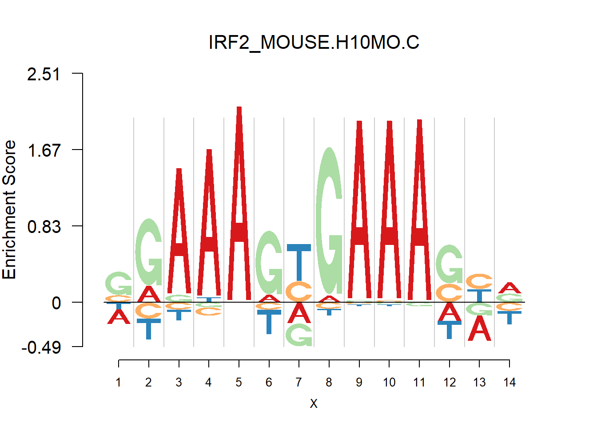
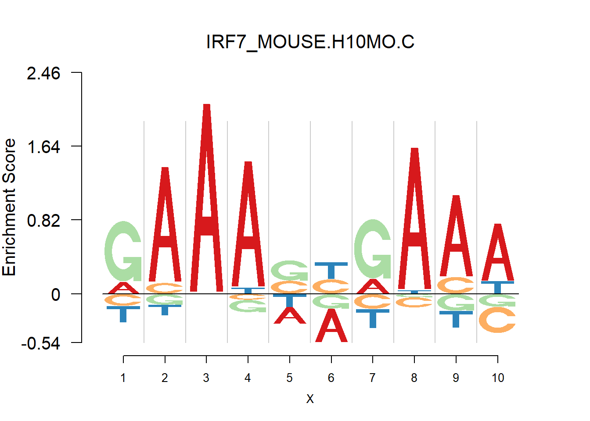
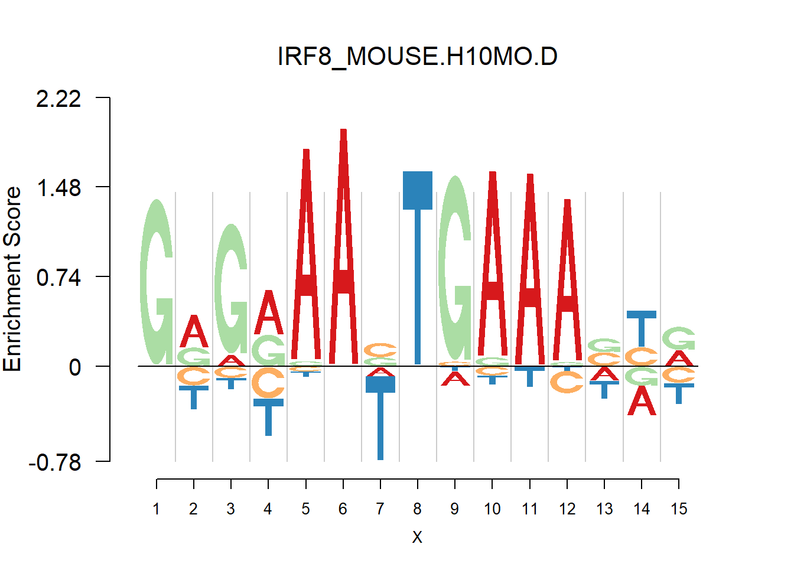

Depletion
Dongyue Xie
2017-07-17
Last updated: 2017-07-18
Code version: 49915de
We have seen some negative logo plots and depletion exmaples in previous vignettr. Now, We are interested in finding the depletion of one particular base(e.g. (0,1/3,1/3,1/3)) and then study whether the corresponding transcription factors have special functionality.
For convenience, I call this kind of case as “perfect depletion”. Perfect depletion corresponds to \(p=(0,\frac{1}{3},\frac{1}{3},\frac{1}{3})\) in position weight matrix(PWM) where 0 is the weight of depleted base. In such case, the information content(IC) is then \((0.415,0,0,0)\), where \(0.415\) is the negative IC. With pseudocounts, we would not have the case like \(p\). So now suppose the perfect depletion case is \(q=(0.01,0.33,0.33,0.33)\), then the IC is \((0.35,0,0,0)\). One simple way to find such cases is to measure the difference between the largest IC on nagative part and the second largest IC on each position. The difference is denoted as \(d\). Then if the difference is larger than a threshold \(\alpha\), the perfect depletion exists.
Here, \(\alpha\) is chosen empirically. For a database(HOCOMOCO, JASPAR 2014), suppose it has total \(m\) PWMs and take the largest \(d\) for each PWMs, then we have \(m\) differences. Sort the \(m\) number descendingly and find the smallest \(d\) such that the IUPAC code corresponding to that PWM has either B,D,H or V and after that \(d\), there are seldomly such PWMs.(See http://www.bioinformatics.org/sms/iupac.html for the IUPAC code.) Then the value this smallest \(d\) is the threshold \(\alpha\). The rationale is that in IUPAC code, B means C or G　or T, which actually corresponds to the depletion in A. The same reason holds for D, H and V.
Also, if the sum of counts for each position in pfm is smaller than 20, the corresponding pfm is discarded.(One alternative way is to use dash)
For transcription factor with perfect depletion, we record its name, depleted positions, bases, distances, PWM and the neighbors of depleted bases.
Analysis
Firstly, we get the depletion list of each database. There are some overlaps of JASPAR 2014 and HOCOMOCO. So here our analysis of depleted TFs focuses on HOCOMOCO database, which consists of Human and Mouse data.
#get the list of perfect depeltion from JASPAR, HOCOMOCO
DepJaspar=depletion(PWMJaspar,findalpha(scJaspar,50,PWMJaspar))
DepHuman=depletion(PWMHuman,findalpha(scHuman,50,PWMHuman))
DepMouse=depletion(PWMMouse,findalpha(scMouse,50,PWMMouse))
paste('There are',length(DepHuman),'perfect depletion in Human data')[1] "There are 41 perfect depletion in Human data"paste('There are',length(DepMouse),'perfect depletion in Mouse data')[1] "There are 33 perfect depletion in Mouse data"We then analyzed the genes that produce these TFs(with delpetion), by the censusPathDB. The idea is that each TF is produced by a gene and then we test if the gene producing TF with depletion is related to a specific function. It turns out that the depletion is probably not connected with specific functional behavior. See here for details.
From the analysis of HOCOMOCO plots, we found that two TF families are of interests - SOX and IRF, the reason is that there are several Trancription factor with perfect delpeltion, namely SOX17, SOX3 and IRF3,IRF4,IRF8. Below are the logo plots of Mouse IRF family.
for (i in grep('IRF',names(PWMMouse))){
if(sum(is.na(PWMMouse[[i]]))==0){
print(GetIUPACSequence(PWMMouse[[i]]))
nlogomaker(PWMMouse[[i]],logoheight = 'ic',color_profile = color_profile,frame_width = 1, pop_name = names(PWMMouse[i]),ylimit=2.1)
}}[1] "RAAASYGAAASY"[1] "SGAAAGYGAAASYR"
[1] "GGAAASYGAAASBRRRA"
[1] "AAAARAGRAAVTGARA"[1] "GAAASYRAAW"
[1] "GRGRAAVTGAAASYR"
One kind of plots that are of particular interests is the dimer. For example, the logo plots of IRF families are dimers, with depletion in the middle and enrichment in the two sides. We found that dimer is common and usually has the characteristic that depletion gap is between two palindromic sequences(or same sequence like IRF, not common). For example, TGGGG__CCCCA.
Depletion frequncies
This section presents the delpletion frequency for A,G,C,T at different postions. For each base, in the PWM of a transcription factor, suppose the depletion occurs at the \(n_{base}^{th}\) postion and the total number of postion is \(n\). Then we measure the relative distance of postion to the center as: \(d=|\frac{n_{base}}{n}-0.5|\). If d is close to 0.5, then the depletion position is close to the end. If d is close to 0, then the delpetion position is close to the center.
From the histograms, there are more depletion at the ends than that at the center for the bases.
Session information
sessionInfo()R version 3.4.0 (2017-04-21)
Platform: x86_64-w64-mingw32/x64 (64-bit)
Running under: Windows 10 x64 (build 15063)
Matrix products: default
locale:
[1] LC_COLLATE=English_United States.1252
[2] LC_CTYPE=English_United States.1252
[3] LC_MONETARY=English_United States.1252
[4] LC_NUMERIC=C
[5] LC_TIME=English_United States.1252
attached base packages:
[1] stats4 parallel stats graphics grDevices utils datasets
[8] methods base
other attached packages:
[1] Logolas_1.1.2 TFBSTools_1.14.0 JASPAR2014_1.12.0
[4] Biostrings_2.43.8 XVector_0.15.2 IRanges_2.9.19
[7] S4Vectors_0.13.17 BiocGenerics_0.22.0
loaded via a namespace (and not attached):
[1] Rcpp_0.12.11 lattice_0.20-35
[3] GO.db_3.4.1 png_0.1-7
[5] Rsamtools_1.27.16 gtools_3.5.0
[7] rprojroot_1.2 digest_0.6.12
[9] R6_2.2.0 GenomeInfoDb_1.12.0
[11] plyr_1.8.4 backports_1.0.5
[13] RSQLite_1.1-2 evaluate_0.10
[15] httr_1.2.1 ggplot2_2.2.1
[17] zlibbioc_1.21.0 lazyeval_0.2.0
[19] annotate_1.54.0 R.utils_2.5.0
[21] R.oo_1.21.0 Matrix_1.2-9
[23] rmarkdown_1.6 splines_3.4.0
[25] BiocParallel_1.10.0 readr_1.1.1
[27] stringr_1.2.0 CNEr_1.12.0
[29] RCurl_1.95-4.8 munsell_0.4.3
[31] DelayedArray_0.2.0 compiler_3.4.0
[33] rtracklayer_1.35.12 seqLogo_1.42.0
[35] DirichletMultinomial_1.18.0 htmltools_0.3.5
[37] KEGGREST_1.16.0 SummarizedExperiment_1.6.0
[39] tibble_1.3.0 GenomeInfoDbData_0.99.0
[41] matrixStats_0.52.2 XML_3.98-1.6
[43] TFMPvalue_0.0.6 GenomicAlignments_1.11.12
[45] bitops_1.0-6 R.methodsS3_1.7.1
[47] grid_3.4.0 xtable_1.8-2
[49] gtable_0.2.0 DBI_0.6-1
[51] git2r_0.18.0 magrittr_1.5
[53] scales_0.4.1 stringi_1.1.5
[55] reshape2_1.4.2 RColorBrewer_1.1-2
[57] tools_3.4.0 BSgenome_1.44.0
[59] Biobase_2.35.1 poweRlaw_0.70.0
[61] hms_0.3 yaml_2.1.14
[63] AnnotationDbi_1.38.1 colorspace_1.3-2
[65] GenomicRanges_1.27.23 caTools_1.17.1
[67] memoise_1.1.0 VGAM_1.0-3
[69] knitr_1.15.1 This R Markdown site was created with workflowr